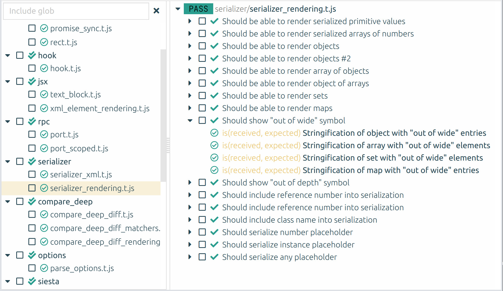

You can export the results of running a test suite in a structured format. To do that, provide the --report-format and --report-file options to the launcher. Supported formats are html, json, and junit. These options can be repeated several times, to generate several reports.
Default format is json.
JSON report creates a single JSON file, fully describing the execution of the test suite.
HTML report is a small, self-contained web-application, which can be used to examine test suite execution results
in the browser. When using HTML report, the --report-file option actually specifies the directory for files
(as this report consists from several files).
For example, to generate JSON report, assuming your Siesta project file is index.js:
> node index.js --report-file report.json
Or, to generate HTML report:
> node index.js --report-file html_report --report-format html
After generation, open the html_report/index.html file in the browser, you should see something like:
Generating reports
You can export the results of running a test suite in a structured format. To do that, provide the
--report-formatand--report-fileoptions to the launcher. Supported formats arehtml,json, andjunit. These options can be repeated several times, to generate several reports. Default format isjson.JSON report creates a single JSON file, fully describing the execution of the test suite.
HTML report is a small, self-contained web-application, which can be used to examine test suite execution results in the browser. When using HTML report, the
--report-fileoption actually specifies the directory for files (as this report consists from several files).For example, to generate JSON report, assuming your Siesta project file is
index.js:Or, to generate HTML report:
After generation, open the
html_report/index.htmlfile in the browser, you should see something like:
COPYRIGHT AND LICENSE
MIT License
Copyright (c) 2009-2021 Bryntum, Nickolay Platonov